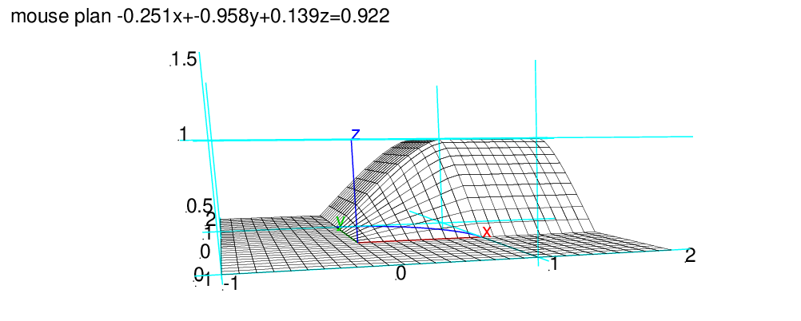

Une urne contient 5 boules blanches et 5 boules rouges. On les tire une à
une avec remise jusqu’à ce que l’on obtienne une boule blanche.
Soit X la variable aléatoire "rang de la première boule blanche".
Déterminer la loi de X, son espérance et sa variance.
X suit une loi géométrique de paramètre p=1/2.
On a :
Proba(X=n)=(1−p)n−1*p=1/2n
On a bien :
∑k=1+∞ 1/2k=1/2*
∑k=0+∞1/2k−1=1/2*2=1
La fonction de répartition de X est :
F(n)=Proba(X≤ n)=∑k=1n1/2k=1−1/2n+1
On sait que :
E(X)=1/p=2
σ2(X)=1/p=2
On vérifie avec Xcas :
sum(k/2^k,k=0..inf) renvoie 2
E(X2)=1/p=2
On vérifie avec Xcas :
sum(k^2/2^k,k=0..inf) renvoie 6
donc σ2(X)=E(X2)−E(X)2=2
Une urne contient 5 boules blanches et 5 boules rouges. On les tire une à
une sans remise jusqu’à ce que l’urne soit vide.
Soit X la variable aléatoire "rang de la première boule blanche".
Déterminer la loi de X, son espérance et sa variance.
La loi de Bernouilli que l’on repète n’est pas la même car on ne remet
pas les boules dans l’urne : ce n’est donc pas une loi géométrique.
Trouver la loi de X c’est trouver :
Proba(X=n) puis sa fonction de repartition F.
X ne peut prendre que les valeurs 1,2,3,4,5,6.
On a (on fait les calculs avec Xcas) :
Proba(X=1)=5/10=1/2 (car on a 10 boules dont 5 blanches)
Proba(X=2)=1/2*5/9=5/18=comb(5,1)/comb(10,1)*5/9 (car au 2ième tirage il
reste 9 boules dont 5 blanches)
Proba(X=3)=1/2*4/9*5/8=5/36=comb(5,2)/comb(10,2)*5/8 (car au 3ième tirage
il reste 8 boules dont 5 blanches)
Proba(X=4)=1/2*4/9*3/8*5/7=5/84=comb(5,3)/comb(10,3)*5/7
Proba(X=5)=1/2*4/9*3/8*2/7*5/6=5/252=comb(5,4)/comb(10,4)*5/6
Proba(X=6)=1/2*4/9*3/8*2/7*1/6*5/5=1/252=comb(5,5)/comb(10,5)*5/5
On a la formule :
Proba(X=n)=comb(5,n−1)/comb(10,n−1)*5/(11−n)
Donc :
F(1)=1/2
F(2)=1/2+5/18=7/9
F(3)=7/9+5/36 =11/12
F(4)=11/12+5/84=41/42
F(5)=41/42+5/252=251/252
F(6)=251/252+1/252=1
On vérifie avec Xcas par exemple :
sum(comb(5,n-1)/comb(10,n-1)*5/(11-n),n=1..2) renvoie 7/9
sum(comb(5,n-1)/comb(10,n-1)*5/(11-n),n=1..2) renvoie 41/42
E(X)=1/2+5/9+5/12+4/21+25/252+6/252=25/14
E(X2)=1/2+10/9+15/12+16/21+125/252+36/252=179/42
σ2(X)=179/42-25*25/14/14=631/588
La loi binomiale négative est une distribution de probabilité
discrète. Elle dépend de 2 paramètres : un entier n (le nombre de
succès attendus) et un réel p de ]0,1[ (la probabilité d’un succés).
On la note NegBin(n,p).
Elle permet de décrire la situation suivante : on fait une suite de tirages
indépendants (avec pour chaque tirage, la probabilité p d’avoir un
succès) jusqu’à obtenir n succès.
La variable aléatoire représentant le nombre d’échecs qu’il a fallut avant
d’avoir n succès, suit alors une loi binomiale négative.
Si on définit comb(n,k) pour n<0 par comb(n,k)=n*(n-1)*..*(n-k-1)/k!, alors
Si X ∈ NegBin(n,p) (n ∈ ℕ et p ∈ ]0;1[) alors
Proba(X=k)=pn*(p-1)k*comb(-n,k)
ce qui justifie le nom de loi binomiale négative et qui facilite le calcul de
l’espérance (égale à n(1−p)/p) et de la variance (égale à
n(1−p)/p2).
Dans un pays imaginaire on impose aux familles d’avoir des enfants jusquà la
naissance d’un garçon et de ne plus avoir d’enfants après
la naissance de ce garçon.
Est-ce que cette loi favorise la naissance des filles ?
On répondra à cette question en supposant que dans ce pays :
Une solution
^(k+1),k=0..9)+10*p^10^10^k,k=0..n-1)+1n*(1-p)^n)^n-p-(1-p)^n+1)/p^n)^10)/p^10On considère un point aléatoire M uniformément réparti sur le disque de centre O et de rayon R c’est à dire que la probabilité pour que M appartienne à un domaine G du disque est proportionnelle à l’aire de G.
On a donc Proba(x∈ G)=(aire de G)/(R2).
Étude de la variable aléatoire X=OM
X varie de 0 à R et la fonction de répartition de X est donc :
F(x)=0 si x≤ 0
F(x)=π x2/π R2=x2/R2= si 0<x ≤ R
F(x)=1 si x > R
La densité de probabilité est donc :
f(x)=0 si x≤ 0 ou x> R
f(x)=2x/R2 si 0<x≤ R
L’éspérance de X est :
E(X)=∫0Rxf(x)dx=∫0R2x2/R2dx=2R/3
On calcule E(X2) :
E(X2)=∫0Rx2f(x)dx=∫0R2x3/R2dx=R2/2
La variance de X est :
σ2(X)=E(X2)−E(X)2=R2/2−4R2/9=R2/18
Soit la variable aléatoire à 2 dimensions (X,Y) uniformément distribué
sur le quart de disque D de centre O, de rayon R situé dans le quart de
plan x>0 et y>0.
On demande la fonction de répartition de (X,Y).
La probabilité pour que M=(x,y) appartienne à un domaine G du quart de
disque D est proportionnelle à l’aire de G.
Pour calculer la fonction de répartition, on va calculer :
l’aire A du quart de disque : A=π R2/4 et
l’aire ASa du secteur :
Sa={(x,y)∈ D : a<x<R} qui est aussi l’aire du secteur
{(x,y)∈ D : a<y<R}.
Soit α l’angle OxM où M est le point du quart de cercle d’abscisse
x.
On a :
α= acos (x/R)
aire de Sa=ASa=α R2/2−x√(R2−ax2)/2
X et Y varient de 0 à R et la fonction de répartition de X,Y est
donc :
F(x,y)=0 si x≤ 0 ou y≤ 0
F(x,y)=1 si x≥ R et y≥ R
F(x,y)=4xy/π R2/A si x2+y2≤ R2
F(x,y)=(π R2/4−ASx)/A si x2+y2> R2 et x≤ R et y≥ R
F(x,y)=(π R2/4−ASy)/A si x2+y2> R2 et x≥ R et y≤ R
F(x,y)=(4xy/π R2−ASx−ASy)/A si x2+y2> R2 et x<R et y<R
F(x,y,R):={
local a,b,AS,BS,A;
si type(x)!=DOM_FLOAT ou type(y)!=DOM_FLOAT alors
retourne 'F'(x,y,R);
fsi;
si x<=0 ou y<=0 alors retourne 0; fsi;
si x>=R et y>=R alors retourne 1; fsi;
A:=pi*R^2/4;
si (x^2+y^2<=R^2) alors retourne x*y/A; fsi;
si x^2+y^2>R^2 et x<R et y>R alors
a:=acos(x/R);
AS:=a*R^2/2-x*sqrt(R^2-x^2)/2;
retourne (pi*R^2/4-AS)/A;
fsi;
si x^2+y^2>R^2 et y<R et x>R alors
a:=acos(y/R);
AS:=a*R^2/2-y*sqrt(R^2-y^2)/2;
retourne (pi*R^2/4-AS)/A;
fsi;
si x^2+y^2>R^2 et x<R et y<R alors
a:=acos(x/R); b:=acos(y/R);
AS:=a*R^2/2-x*sqrt(R^2-x^2)/2;
BS:=b*R^2/2-y*sqrt(R^2-y^2)/2;
retourne (pi*R^2/4-AS-BS)/A;
fsi;
}:;
On tape :
plotfunc(F(x,y,1),[x=-1..2,y=-1..2]);
affichage(plotparam([x,sqrt(1-x^2),0],x=0..1),
4+epaisseur_ligne_2)
On obtient :
